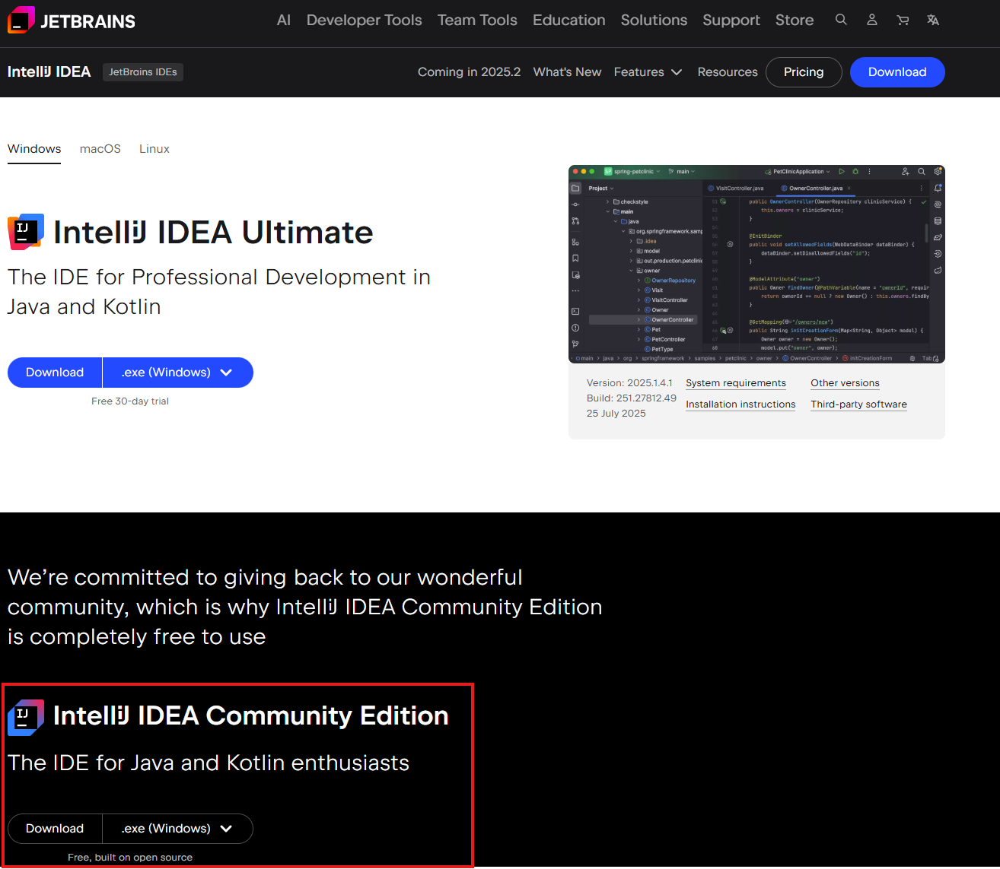
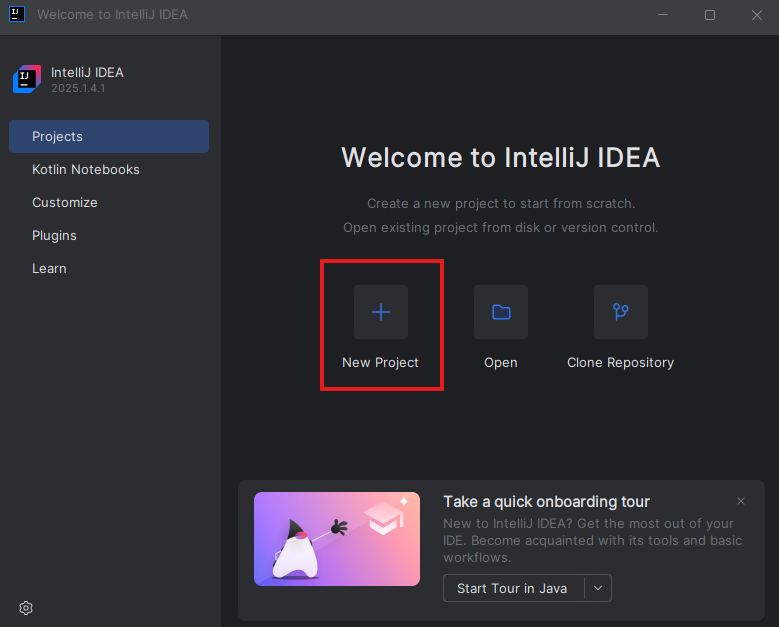
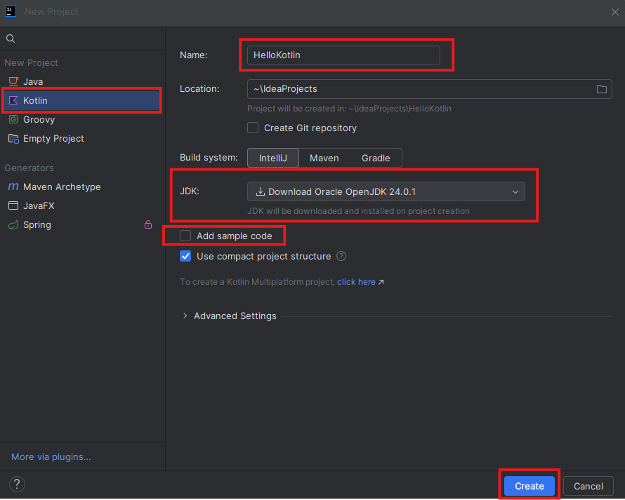
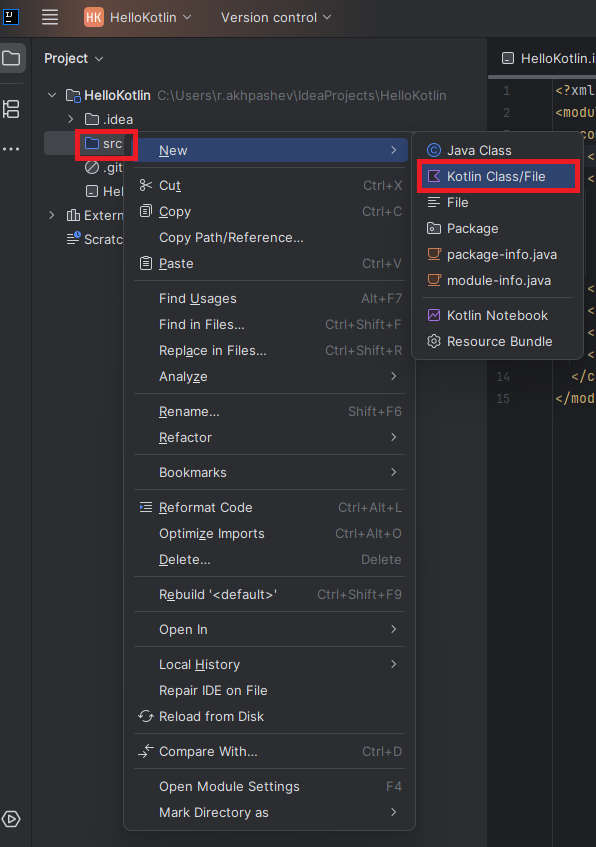
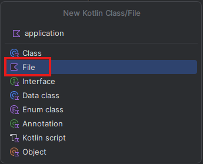
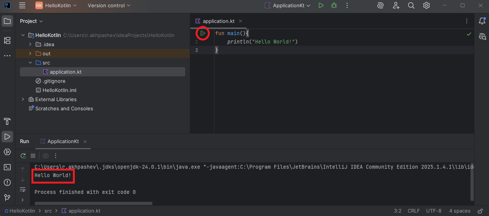

Установка средств разработки
Установка IntelliJ IDEA
Компилировать и запускать программы на базе языка Kotlin можно в консоли (в терминале), однако, если есть желание разрабатывать
приложения более сложно порядка, чем println('Hello World'), рекомендуется использовать IDE. Можно выбрать одно из
наиболее популярных в сфере разработки: IntelliJ IDEA, Android Studio, Eclipce и др.
Начнем мы с работы в IntelliJ IDEA. Пройдя по ссылке, устанавливаем Community Edition (бесплатную) версию.
{kind=link}

IntelliJ IDEA Community Edition (free).
Можно установить под Windows, Linux, MasOS.
Создание первого проекта
После установки запускаем IntelliJ IDEA Community Edition и создаем новый проект (настройки среды уже сделаете сами под себя).
{kind=link}

Создать новый проект.
Далее, настраиваем параметры проекта.
{kind=link}

Настройка проекта.
Name - имя вашего проекта;
Location можно указать путь к проекту, если не устраивает путь по умолчанию;
В левом столбце выбираем Kotlin;
JDK - можно указать путь к Java SDK, если он уже установлен на компьютере локально. Заметьте, если у вас не установлен
JDK, среда предложит версию для установки;Add sample code - убираем галочку, чтобы начать проект
с нуля, без сгенерированного кода.
После создания проекта, вам откроется сам проект, в левой части которого будет отображаться его структура.
{kind=link}

Создание первого кодофайла.
Весь код нашего проекта будет находится в папке source aka src. Создадим первый файл, в котором и начнем писать код.
В открывшемся окне, выбираем File, называем, например “application” (можно любой другое название) и получим application.kt или ваше_имя.kt.
{kind=link}

Application - filename.
Точкой входа в программу (первая фукнция выполнения), по умолчанию, является функция main. Напишем примитивный, всем известный, код вывода в консоль:
1fun main(){
2 println("Hello World!")
3}
Для инициализации фукнции в Kotlin используется ключевое слово fun. Далее, вызываем другую функцию println(), которая выведет текст в консоль.
{kind=link}

Hello World!.
Ура! Первый проект готов.